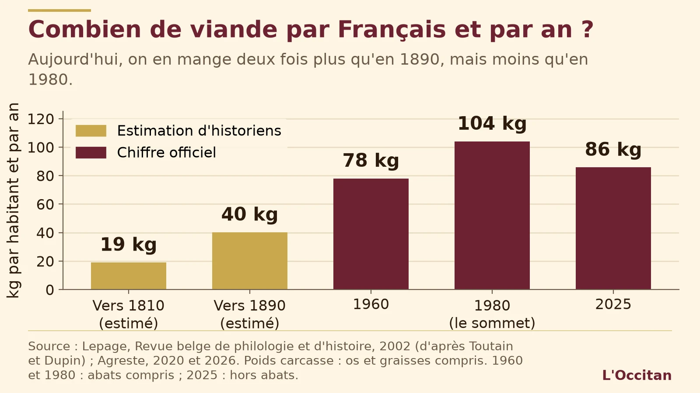

Deux siècles de viande en France
Combien de viande mange un Français par an, de Napoléon à aujourd'hui ?
Mise à jour : 23 octobre 2026
Sous Napoléon, un Français disposait d'environ 19 kg de viande par an. À la fin du XIXe siècle, d'environ 40 kg. Dans les années 1980, d'environ 105 kg. Aujourd'hui, de 86 kg. Une histoire en deux temps, que les chiffres permettent de suivre, avec prudence pour les plus anciens.

Sources : Lepage, Revue belge de philologie et d'histoire, 2002 (d'après Toutain et Dupin) ; Agreste, 2020 et 2026. Poids carcasse : os et graisses compris. 1960 et 1980 : abats compris ; 2025 : hors abats.
Le XIXe siècle : une première montée
Selon les estimations reprises par l'historien Yvan Lepage (2002), d'après les travaux de l'économiste Jean-Claude Toutain et du nutritionniste Henri Dupin, la consommation moyenne passe de 19 kg par habitant en 1803-1812 à 22,6 kg en 1834-1844, puis à 40,2 kg en 1885-1894.
Les statisticiens de l'époque arrivaient au même ordre de grandeur, en comptant le bétail et les animaux entrés dans les abattoirs. Un article de 1924 rassemble leurs calculs : environ 41 kg en 1892, et entre 40 et 50 kg à la veille de la guerre de 1914. Ils reconnaissaient eux-mêmes ne pas être d'accord entre eux :
« Les auteurs ne sont d'ailleurs point d'accord sur le chiffre de cette consommation ; pour certains d'entre eux, elle était en France, par tête d'habitant, de 26 kilogrammes environ de viande nette en 1862, 41 kilogrammes en 1892, 57 kilogrammes en 1910. »
— M. de Ville-Chabrolle, Journal de la Société de statistique de Paris, 1924
La France produisait alors presque toute la viande qu'elle mangeait : selon le même article, les importations nettes ne dépassaient pas 30 000 à 40 000 tonnes par an en 1911-1913. Lepage, citant l'historien H.-G. Haupt, situe vers 1870 le moment où les classes ouvrières françaises commencent à manger de plus en plus de viande.
1960-1980 : l'explosion
La statistique officielle prend le relais : 78 kg en 1960, 104 kg en 1980, soit 26 kg de plus en vingt ans (Agreste, 2020). Agreste relie cette hausse à la progression du pouvoir d'achat et note qu'« en parallèle, les pratiques d'élevage s'intensifient », à la suite de la loi sur l'élevage de 1966. Cette même année, la France comptait déjà 174 abattoirs industriels (CREDOC, 1968).
La volaille, presque absente en 1960 (9 kg), triple jusqu'en 2018 (28 kg).
Depuis les années 1990 : un recul, puis une stabilité
De 1980 à 1992, la consommation reste autour de 105 kg par habitant. Elle recule ensuite : 89 kg en 2018, 85,7 kg en 2025. Agreste cite plusieurs facteurs, sans pouvoir mesurer le poids de chacun :
- un pouvoir d'achat qui progresse beaucoup moins vite qu'avant 1980 ;
- des crises sanitaires qui entament la confiance : veau aux hormones, vache folle (à partir de 1986), peste porcine, grippes aviaires ;
- des avis nutritionnels sur l'effet des graisses animales sur la santé ;
- une viande plus chère et de meilleure qualité (Label rouge, bio), qui répond selon Agreste à « une demande sociale croissante » sur la santé et les conditions d'élevage.
La baisse a ralenti : à partir de 2014, la consommation se stabilise autour de 89 kg (Agreste, 2020). Après un point bas de 83,2 kg en 2023, année de forte hausse des prix alimentaires, elle remonte en 2024 et 2025, à un niveau comparable à celui de 2016 (Agreste, 2026).
Lire ces chiffres avec prudence
Sources
- Y. Lepage — « Évolution de la consommation d'aliments carnés aux XIXe et XXe siècles en Europe occidentale », Revue belge de philologie et d'histoire, 80-4, 2002, p. 1459-1468
- M. de Ville-Chabrolle — « Chronique agricole », Journal de la Société de statistique de Paris, t. 65, 1924, p. 380-391
- N. Campion, CREDOC — « L'évolution de la consommation de viande de 1950 à 1966 », 1968
- Agreste, Primeur n° 4 — « En France, la consommation de viande se modifie fortement entre 1960 et 2018 », juin 2020
- Agreste / FranceAgriMer, Synthèses n° 451 — consommation de viande en France en 2025, juillet 2026